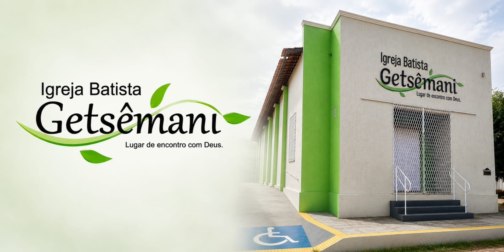

Somos uma comunidade de fé dedicada a compartilhar o amor de Deus e a mensagem de Jesus Cristo. Nossa missão é servir a Deus e ao próximo, promovendo o crescimento espiritual e o bem-estar da nossa congregação e da comunidade em geral.
Explore nosso site para conhecer mais sobre nossa história, ministérios e como você pode se envolver em nossas atividades. Estamos ansiosos para recebê-lo em nossa igreja!
Localização: R. Toré, 909 - Planalto Treze de Maio, Mossoró - RN, 59631-520


getsemani.ibg19@gmail.com | R. Toré, 909 - Planalto Treze de Maio, Mossoró-RN, 59631-520